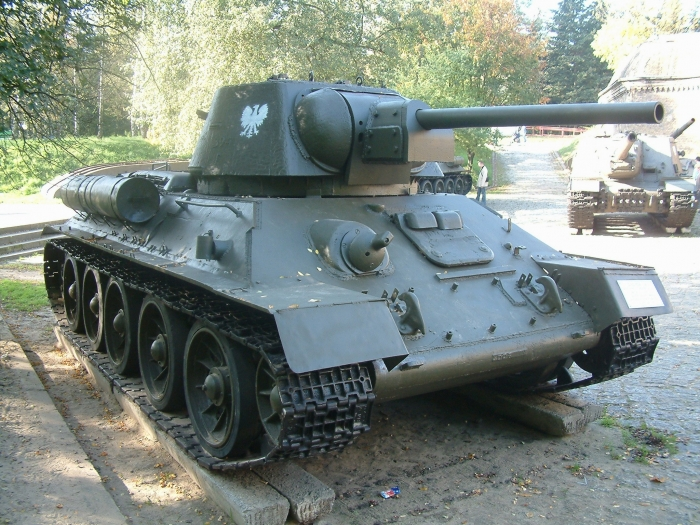

Т-34, принятый на вооружение 19 декабря 1941 года, стал самым лучшим танком второй мировой войны. Его появление на фронте повергло в шок танкистов противника, и все дальнейшие разработки немецкого противотанкового оружия были нацелены прежде всего на борьбу с Т-34.

В ходе гражданской войны в Испании стало ясно, что танки БТ при всех своих выдающихся характеристиках весьма уязвимы от огня противотанковых пушек. Собственно говоря, в этом не было ничего удивительного: когда танки БТ проектировались, основным средством поражения танков были крупнокалиберные пулемёты и противотанковые ружья, а главным противником в будущей войне мыслились Польша и Румыния. Однако военная техника не стояла на месте, и у лёгких танков появился весьма грозный противник. Кроме того, будучи оборудованными бензиновыми двигателями, танки в бою часто воспламенялись. В связи с этим, 13 октября 1937 года Автобронетанковое управление РККА (АБТУ) выдало заводу № 183 тактико-технические требования на новый танк под индексом БТ-20, после чего конструкторское бюро Харьковского завода, возглавляемое Михаилом Ильичом Кошкиным, начало разрабатывать колесно-гусеничный танк с противоснарядным бронированием и дизельным двигателем.
В сентябре 1938 года по итогам рассмотрения макета танка БТ-20 комиссией АБТУ РККА под председательством Я.Л. Сквировского было принято решение об изготовлении трёх танков (один колёсно-гусеничный и два гусеничных) и одного бронекорпуса для испытаний обстрелом (впоследствии А-32). Таким образом, дальнейшая работа в КБ-24 над проектом гусенично-колёсного танка БТ-20 была прекращена, а все усилия конструкторов были направлены на разработку двух новых танков – А-20 и А-32.
Машина А-20 ненамного превосходившая по своим боевым характеристикам БТ, все же обладала двумя преимуществами: дизельным двигателем и повышенной снарядостойкостью за счет расположенных, под большими углами броневых листов корпуса. Поскольку масса А-20 была выше, чем у БТ, танк имел и три пары ведущих колес. Машина поворачивалась по танковому типу: ведущие колеса притормаживались с той стороны, в которую поворачивал танк.
Быстроходный дизель-мотор В-2 был разработан харьковскими конструкторами К. Ф. Челпаном, И. Я. Трашутиным, Я. Е. Вихманом, И. С. Бером. Он оказался первым в истории специально сконструированным танковым дизелем большой мощности. Двигатель обладал рядом преимуществ: высокой экономичностью по сравнению с карбюраторным, легче переносил перегрузки. К тому же использование дизельного топлива снижало вероятность пожара.
Работая над А-20 , Кошкин и его коллеги убедились в том, что колесно-гусеничный движитель становится громоздким и ненадежным, когда масса танка достаточно велика (а такое неизбежно при увеличении толщины брони). По мнению конструкторов, будущий; массовый танк с противоснарядным бронированием должен быть чисто гусеничным. И вот по инициативе КБ М. И. Кошкина разрабатывается другая машина – Т-32. Масса ее – 19 т – оказалась всего на тонну больше, чем у А-20, зато на машине установили 76-мм пушку длиною 30 калибров и толщину лобовой брони увеличили до 30 мм.
И. Кошкина разрабатывается другая машина – Т-32. Масса ее – 19 т – оказалась всего на тонну больше, чем у А-20, зато на машине установили 76-мм пушку длиною 30 калибров и толщину лобовой брони увеличили до 30 мм.
Оба танка испытывались одновременно летом и осенью 1938 года. Комиссия, принимавшая машины, положительно отозвалась о работе харьковчан. Было отмечено, что и А-20 и Т-32 пригодны для вооружения Красной Армии. Однако отзыв отзывом, а испытания показали, что Т-32 имеет большой запас надежности, из-за этого массу машины можно увеличить на несколько тонн. М. И. Кошкин решил использовать появившуюся возможность для усиления бронирования лобовых частей до 45 мм, а бортовых – до 40 мм. Таким этот танк – под обозначением Т-34 – и был по постановлению Народного Комиссара Обороны 19 декабря 1939 года принят на вооружение армии.